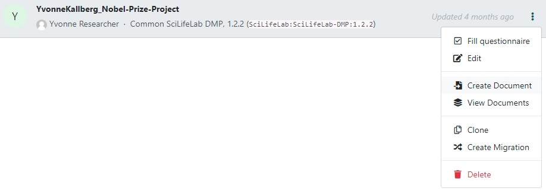
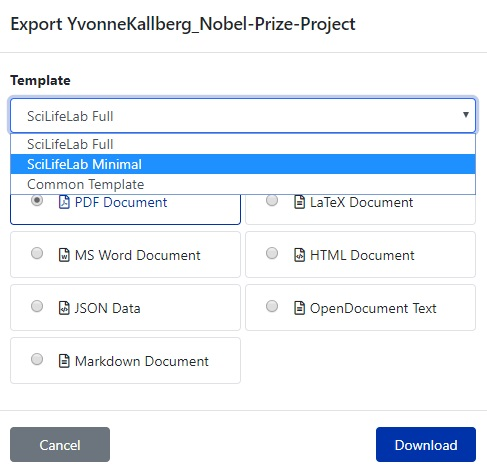

Instructions on how to export a Questionnaire
When the DMP is completed, you can download it to your computer using the Export
function.

There are currently three export templates:
- SciLifeLab Full - Contains, in addition to the questions and answers, also the guidance.
- ScilifeLab Minimal - Will reduce output somewhat, removing the guidance,
the focus is the questions and answers.
- Common Template - Can be useful when other Knowledge Models (from DS Wizard team)
is the base for a questionnaire, since it also contains summary report.
Click on the file format you want (typically PDF or MS Word), and finally click
Download.
